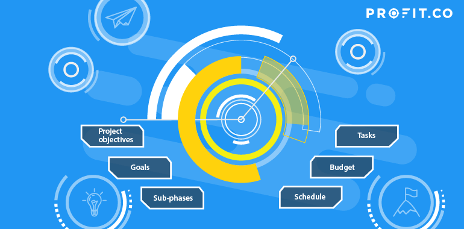
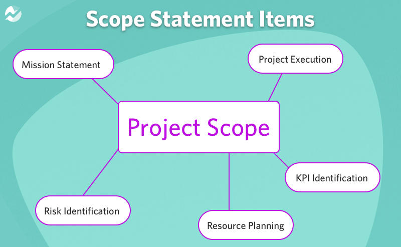

Defining your project scope is a very important first step in project management. With a well defined project scope you will be able to make sure that all aspects of the project are in line with the objectives and manage your stakeholder expectations. Creating your project scope will be done in the project planning stage and you will have to figure out your projects goals, tasks, costs, deliverables, and deadlines and then document them. Your scope will help guide your project team throughout the project. It will help define who is in charge of what and outline procedures for how work will be approved. The scope can change over the duration of the project however this is more likely in large projects and if your scope has been effectively defined at the beginning then these changes should be easy to make and implement.

Defining your project scope
When defining your project scope you will need to communicate with project stakeholders in order to get requirements such as budget, quality, timeline and objectives. When talking with the stakeholders about the requirements it is important to get the most accurate information possible as this will make it easier to deliver a project that meets all of their expectations. Keep in mind your project scope should be very detailed and should outline a set of rules to follow when making decisions almost like the bylaws of the project. It is also very important for stakeholders to review your project scope and make sure they are happy with the cost, timeline, deliverables and everything else.
Key Elements of a well defined project scope
Project Objectives: A well written project scope will clearly define all objectives and goals. It should answer questionsddddddservices, products, or any results the project hopes to produce
Scope Description: A detailed narrative should be provided that describes the project's boundaries. It should clearly state the work that will be done for the project and what is included in the scope and what is not.
Acceptance Criteria: This is an important part of the scope as it defines what is considered to be a successful completion of the project. This should be based on the criteria defined by the stakeholders.
Constraints: You should list any and all constraints that may affect the completion of the project. This can include budget, resources, time and or regulations. Defining and understanding these constraints is important as it helps the team understand and struggles they might have and the better you understand the more you can expect them and adapt to overcome struggles. Example: “this project has a set due date of April 21st 2024 and a budget of 50,000 dollars”.
Stakeholder Involvement: There should be a written list of clearly defined expectations and responsibilities of the stakeholders in the project. Understanding what should be expected from stakeholders should allow easier communication and understanding what they will be responsible for will allow for smoother project execution.

Basic Template for Project Scope
I wanted to provide a basic template for a project scope so readers can get an idea of what an outline would look like. This basic template includes all the key elements I talked about before
Project Title
Project Summary
Concise summary of the project
Project Objectives and Goals
You should list specific deliverables that will be produced by the final project.
Project Deliverables
You should list specific deliverables that will be produced by the final project.
Scope Description
Define the boundaries of the project and list functionalities, features and processes involved.
Acceptance Criteria
List all the criteria that needs to be met for the project to be completed successfully
Constraints
Write anything that might impact your ability to finish the project successfully such as time, budget, technology, and or limitations.
Assumptions
Identify the assumptions made relating to the project, anything that may influence planning and execution.
Risk and Issues
Identify any and all potential risks that could affect the project and your ability to get it done.
Stakeholder Involvement
You should list the stakeholders and their roles and responsibilities in the project.
Helpful Tips
Be as specific and clear: When writing your project scope you want to be as specific as possible to avoid any potential misunderstandings relating to the project's objectives and boundaries.
Regular Review and Update: In some projects especially larger ones scope is not static. You should review regularly and update if needed to reflect changes during the project's lifetime.
Collaborate with Stakeholders: Communication and involvement with stakeholders is important. You should involve them in defining the project's scope and make sure their expectations are met. Also make sure to inform the stakeholders if there are any changes in the project scope and make sure they approve.
Refer to Historical Data: You can refer to past projects scope statements to get an idea of how it should be written and to make sure it is clear and understandable and in line with company practices.
Conclusion
Writing a well structured project scope that is comprehensive and clear on objectives can lead to smooth sailing for your project. By communicating with stakeholders to define clear expectations. It is important to define the project's goals, tasks, costs, deliverables, and deadlines so they can be followed throughout the duration of the project. By taking your time to create a well defined project scope you will set you and your team up for success.